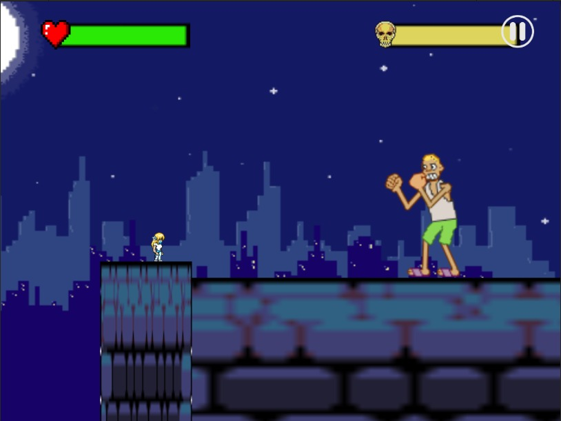
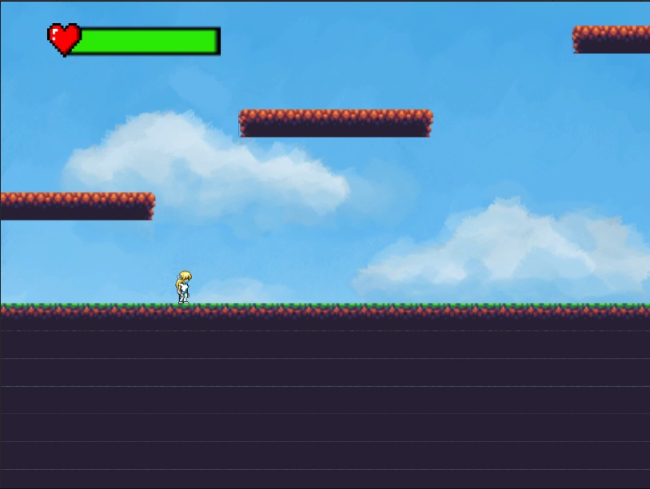

Copyright-Fire Blasters © 2021
TC2005B.100
|  |

|
 |
|
El juego se centra en Emily, una ingeniera química qué quiere encontrar una cura para la “pandemia”. Comenzando cada nivel con su ingenio Emily logra “crear” la herramienta perfecta para la situación, utilizando su conocimiento de STEM. |
El objetivo es eliminar las concepciones y generar interés en las carreras de STEM. Se logrará esto con la capacidad, ingenio y grandes logros de nuestro personaje principal. Con este tipo de carreras se puede hacer un gran cambio en la sociedad. Emily será un ejemplo a seguir! |
Emily al momento de crear power-ups tendrá que hacer un sencillo reto químico y se medirán los intentos que necesitó el usuario para completarlo y se guardarán y analizarán los datos. También se sabrá cuántos usuarios terminaron el juego y sus tiempos |
Copyright-Fire Blasters © 2021
TC2005B.100